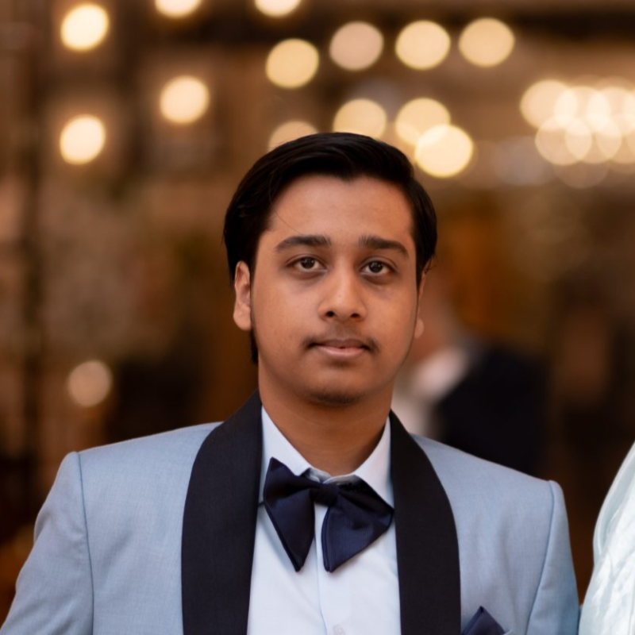

Sameed Ahmed Siddiqui
BS Computer Science Student at FAST NUCES Islamabad
AI/ML developer passionate about building intelligent, human-centric software. I specialize in bridging the gap between complex machine learning algorithms—ranging from adversarial defenses to multi-agent generative pipelines—and intuitive user experiences. I enjoy transforming challenging technical concepts into scalable, end-to-end production systems that deliver measurable, real-world impact.
Education
FAST NUCES
Aug. 2022 — May 2026Bachelor of Science in Computer Science — Islamabad, Pakistan
- Cumulative GPA: 3.41 / 4.00
- Focus Areas: Adversarial Machine Learning, Generative AI Systems, Distributed Big Data Frameworks.
Professional Experience
Data Science Intern
July 2025 — Aug. 2025Asiacell Communication PJSC, CVM Department — Sulaymaniyah, Iraq
- Engineered automated model scoring and self-evaluating pipelines using Apache Airflow DAGs and MLflow to safely replicate production inference environments.
- Conducted validation and automated latency checks on the "roberta_modelv1" LLM to improve structural integrity and accuracy of client automated response mechanisms.
Freelance Software Developer
July 2022 — PresentFiverr Marketplace — Remote
- Delivered highly integrated, functional cross-platform modules and custom script extensions satisfying rigorous architecture requirements for global clients.
Technical Portfolio
FakeLess (CloneShield) — Final Year Project
📦 Repo- Designed a deep 1D U-Net and FilterNet optimization layer to inject imperceptible acoustic protection audio noise patterns, systematically defending target voices against unauthorized XTTSv2 cloning hooks.
- Deployed a highly integrated dual-API infrastructure utilizing Render cloud containers paired seamlessly with a local GPU-accelerated wrapper using secure ngrok routing channels.
Advanced GenAI & Transformer Models
📦 Repo- Architected an unpaired translation CycleGAN pipeline using a custom 6-block ResNet Generator paired with localized PatchGAN discriminators to manage direct Face-to-Sketch visual manipulation layers.
- Programmed a standalone low-resource English-to-Urdu Seq2Seq translation Transformer entirely from scratch using native PyTorch layers and joint subword BPE tokenization structures, achieving an organic 53.73 BLEU metric.
ContentAI Multi-Agent Pipeline
📦 Repo- Migrated static text creation architectures into a specialized multi-agent cyclical state engine built atop LangGraph, dividing execution processes across autonomous understanding and drafting nodes.
- Engineered a local production environment wrapping containerized local LLM models with a ChromaDB context vector index for rapid template formatting enforcement.
Real-Time Crime Analytics Layer
📦 Repo- Constructed an enterprise-level Lambda Architecture running high-velocity real-time pipeline processing (100 logs/sec stream limits via Kafka and Storm topologies) running in parallel with PySpark batch arrays.
- Successfully migrated the entire open-source network environment out of specialized Ubuntu configurations directly into native local Windows clusters via specialized multi-stage PowerShell system orchestrations.
Distributed Plant Disease Classification
📦 Repo- Engineered an optimized distributed analytics map pipeline processing a massive 15.8 GB imaging catalog containing structured crop classifications.
- Eliminated systemic JVM-to-Python cluster overhead restrictions by rewriting raw data structures natively into Spark SQL arrays, compressing physical memory footings by a factor of 128x.